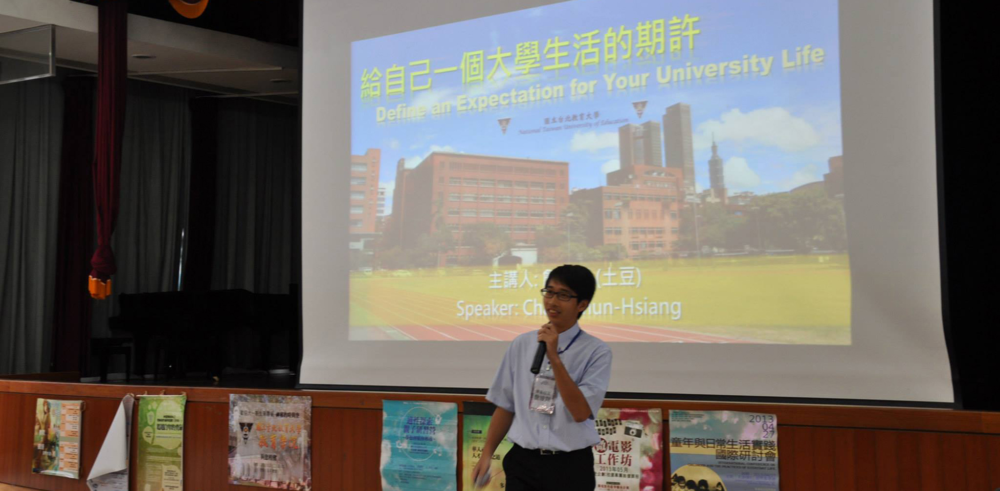

由於我常對許多事情產生興趣，因此常會去參加不同的課程或是做一些專題研究，讓自己可以更深入了解...
語言類
| 1 |
華語 |
Native |
| 2 |
英語 |
Fluent |
| 3 |
俄語 |
Intermediate |
| 4 |
日語 |
Beginning |
技術類
| 1 |
資訊科學 |
Matlab, R, Python, C#, Javascript, jQuery, jQueryUI, Android Development, HTML, MySQL, Nodejs, AngularJS,
MongoDB, Elasticsearch, Spark, Facebook APIs and Twitter APIs |
| 2 |
地理科學 |
GIS (ArcMap, QGIS, SuperGIS) in spatial analysis for vector and image database, and Gephi (data visualization for social
network analysis) |
| 3 |
物理 |
Signal Processing (in time sequence and frequency), Electromagnetic Analysis |
| 4 |
化學 |
Organometallic synthesis, NMR, IR, HPLC, and pH meter, etc. |
| 5 |
設計 |
Illustrator, Photoshop, Dreamwaver and Google SketchUp |
| 6 |
行銷 |
Google Analysis, Facebook Marketing, Yahoo Marketing |
其他興趣
| 1 |
運動 |
排球、羽球、游泳，排球教學、游泳教學以及選手按摩等 |
| 2 |
中醫 |
穴道按摩、拔罐 |
| 3 |
食品科學 |
西點蛋糕與點心、食品分析檢驗、食品化學、澱粉化學、抗性澱粉 |
| 4 |
攝影 |
拍照以及影像處理 |
| 5 |
旅遊 |
想走遍世界每個角落 |
| 6 |
設計 |
設計一些自己平常需要的Logo或是架設網站 |